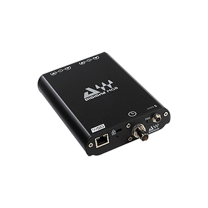

Interfaces
DiGiGrid MGB
MADI-to-SoundGrid interface
The DiGiGrid MGB interface allows you to connect any Coaxial MADI-enabled device to the SoundGrid network. Now, you can record, process and playback up to 128 channels with Waves and third-party SoundGrid-compatible plugins in high-fidelity at a super-low latency of 0.8 milliseconds! In addition to simplifying your routing, the MGB interface enables recording to two computers simultaneously, for virtual soundcheck and backup.